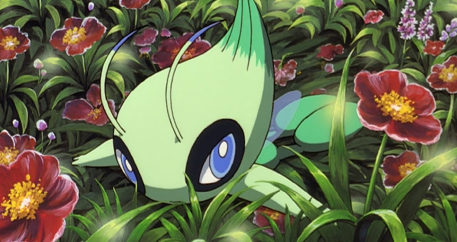

🟡 Nome Japonês: Celebi: The Meeting that Traversed Time
🟡 Nome Americano: Pokémon 4Ever: Celebi, Voice of the Forest
🟡 Nome Brasileiro: Pokémon 4: Viajantes do Tempo - Celebi, a Voz da Floresta
Data de lançamento:
🎞 Japão: 07 de julho de 2001
🎞 Estados Unidos: 11 de outubro de 2002
🎞 Brasil: 08 de julho de 2005
O filme inicia falando do mundo Pokémon e de suas nobrezas. O evento que se segue ocorre na Floresta Ilex, onde Celebi está sendo perseguido por um Houndoom. Depois de certo tempo, é perseguido e atacado por um Scyther também. Houndoom consegue transpassar as barreiras do Pokémon psíquico e, enfim, atingi-lo. Ao cair, um homem lança uma espécie de dispositivo dizendo que o Pokémon a ele pertence. O lendário consegue desviar e voar para longe, porém, continua a ser perseguido pelos outros dois Pokémon.

Pouco depois, assistimos Sam desenhar calmamente alguns Bellossom.
Ao escutar barulhos, ele olha em tal direção. Logo, depara-se com
Celebi e, em seguida, vê Scyther e Houndoom seguidos do caçador. Sam
corre atrás deles e encontra Scyther puxando Celebi com suas
garras.
Sam corre atrás deles e grita com desespero após
se deparar com a cena. O garoto se apressa para salvar Celebi,
quando é atacado pelo Lança-Chamas de Houndoom. No entanto, consegue
se desviar. Com Celebi aos prantos, ramos vão se enrolando nos
Pokémon do caçador. Sam corre mais uma vez para perto de Celebi, mas
para ao ser atingido por um flash de luz forte o suficiente para ser
incandescente e, ao mesmo tempo, atordoante.
Mais uma
vez, Celebi chora e toda a floresta começa a balançar e emitir
fortes luzes. Sam se pergunta o que está ocorrendo, mas esta mesma
luz os engole e, quando o efeito desaparece, tudo o que resta é um
livro e o diário do garoto, ambos no chão. Quarenta anos depois,
Brock e Misty estão esperando Ash em uma cidade portuária para um
passeio de barco. Ash está atrasado e Brock manda Crobat procurá-lo.
O garoto, como era de se esperar, está na praça da cidade,
batalhando com um treinador.
O treinador opta por Croconaw e Ash escolhe Pikachu, que acaba
eletrocutando o Pokémon adversário, assim como seu treinador. Ash
ameaça iniciar um diálogo com seu recém derrotado adversário, porém
Crobat aparece, situando-o de seu atraso, praticamente despercebido
até aquele momento. Ele então corre até o cais.
Ash, guiado por Crobat, está prestes a alcançar seus amigos -
felizmente ainda estão em tempo - quando um caminhão de bagagens o
atrasa e faz com que, ao chegar próximo ao barco, este já esteja em
movimento. Ash pula para o barco, quase cai, mas é agarrado por
Towa, um guia turístico da região.
Enquanto isso,
Marauder pressiona o mesmo caçador de quarenta anos atrás sobre
Celebi. Não tendo respostas, Marauder vai ver a coleção de Pokémon
deste tal caçador. Notando a presença de um Tyranitar, ele manda seu
Sneasel abrir a gaiola. Com o poderoso Pokémon livre, o vilão pega
uma Poké Bola nada convencional e a atira, emitindo uma luz negra ao
invés da tradicional avermelhada.
Com o Pokémon já capturado, a estranha Poké Bola passa a lançar
pequenas faíscas e Marauder a atira mais uma vez, liberando, agora,
seu Tyranitar. De algum modo, o Pokémon fica diferente. O vilão
manda-o destruir toda a casa do caçador, e ele age sem pensar duas
vezes.
Durante o passeio, Ash consegue ver Suicune, o Cão Lendário do tipo
Água. Ele chega a mencionar para os outros que, por sua vez, não
comentam até porque nada conseguiram ver. Quando, por fim, chegam ao
destino, Ash liga para o Professor Carvalho para informá-lo de sua
visão de Suicune, porém este também não dá credibilidade às suas
palavras.
Após isso, Towa convida todos para darem um passeio pela floresta. O
aceite é unânime. Ao mesmo tempo, a já conhecida e esperada Equipe
Rocket observa nossos heróis de um planador movido a pedais. Ocorre
que Jessie, distraída, esquece de pedalar e eles acabam caindo.
O barco chega até uma cachoeira e, sem muitas explicações, levanta
voo até que nossos amigos chegam a um lugar chamado Vila das
Árvores. Lá, eles encontram uma senhora chamada Maki que os conta a
história sobre a Voz da Floresta. A senhora, inclusive, os apresenta
Diana, sua filha.
Em meio ao trajeto, Ash e seus amigos atravessam uma espécie de
túnel, em que dialogam sobre o que viria a ser essa tal voz. A
conversa então é interrompida por um som estranho e a reação de Ash
e Misty é correr em direção ao ruído. Brock por um momento não os
segue, porém momentos depois corre também. Neste ponto, deparam-se
com diversas luzes e encontram Sam junto a Celebi que, por sua vez,
foge assim que os garotos chegam. Após ouvir as recusas de Sam em
voltar para a vila, Ash decide então arrastá-lo para lá.
A Equipe Rocket aparece no caminho de volta, mas sem apresentar
qualquer desafio. Ao avistarem o vilarejo, notam também que existe
um robô gigante e Marauder está sobre ele. Jessie, James e Meowth
percebem que, na verdade, o super vilão pertence à Equipe Rocket. A
batalha se inicia quando Marauder libera Scizor e Sneasel. Ash e
Sam, respectivamente, liberam Bayleef e Charmeleon. Apesar das
dificuldades, ambos os Pokémon amigos saem vitoriosos.
Em uma outra cena, Ash e seus amigos caminham em direção ao vilarejo
após terem acampado momentos antes e terem acompanhado uma cena em
que diversos Metapod evoluem para Butterfree ao mesmo tempo, quando
Celebi é atacado, mais uma vez, pelos vilões. Dessa vez, ele é
capturado pela Dark Ball, a Poké Bola das trevas vista cenas antes.
Os Pokémon locais se rebelam contra Marauder, que usa Celebi para se
defender. Controlado e em fúria, o Pokémon Psíquico ataca e derrota
todos os Pokémon amigos.
Na casa de Towa, ela e Diana notam o redemoinho e então se dirigem
até lá de barco. Nas montanhas, Suicune sente o perigo e vai até a
floresta a toda velocidade. Ash acorda após ter sido golpeado por
Marauder, quando os outros lhe contam que Celebi foi capturado e que
está sob o controle do vilão.
Em outra cena, uma enorme esfera voadora feita de galhos e folhas se
dirige até o lago. Quando ela chega ao destino, Marauder domina seu
centro e a tal esfera inicia um processo de mutação, fazendo-a ficar
parecida com um Scyther gigante. Celebi, por sua vez, vai até o
centro de onde seria a cabeça e é então cercado por vinhas e uma
barreira. Sem expressão alguma, ele agora controla o monstro. Em
seguida, Towa aparece com Ash e os outros. Marauder ordena a Celebi
que coloque fogo no balão. Ash e Sam se afastam enquanto os outros
se protegem.
Ash grita para que Pikachu use seu Choque do Trovão, mas Marauder
salta para um galho próximo. Logo depois ele ordena que Celebi lance
um ataque. Quando Celebi começa a carregar o ataque, Suicune aparece
e salva os dois garotos. Ao avistar Suicune, o ganancioso vilão
decide tê-lo também, lançando Tyranitar em sua direção.
Com a ajuda de Onix de Brock, Suicune derrota Tyranitar.
Brock retorna seu Pokémon e Suicune vai atrás do monstro, mas vinhas
o atacam e acabam dando choques com energia sombria. Celebi então
tem um flashback do momento no qual Ash e os outros estavam voando
junto a ele. Marauder passa a se perguntar o que está acontecendo,
pois Suicune não está sendo atacado. Marauder ordena seu comandado a
continuar, mas suas ordens se misturam aos gritos dos garotos,
fazendo com que o Lendário Pokémon tenha diversos devaneios e
lembranças e, finalmente, recupere seus sentidos e cesse os ataques,
fazendo assim o monstro desmoronar.
Mas algo não está
certo com Celebi: ele começa a "murchar". Sam pede a Ash para tentar
o método que eles usaram antes, mas a água está muito impura devido
aos ataques cheios de trevas lançados por ele. Ocorre então a ideia
de que Suicune possa ser capaz de purificá-la, começando assim a
limpar a água a cada passo que dá sobre ela. O garoto de Pallet
então oferece o líquido a Celebi, porém não surte efeito. Celebi não
responde, parecendo que ele está morto.
A floresta começa então a tremer e emitir a mesma luz azul de antes,
porém com um forte foco situado acima do lago. A seguir, um grande
número de Celebi surge e eles usam seus poderes a fim de ajudar seu
irmão "morto". O Pokémon da mesma espécie "revive" e se mostra muito
feliz em ver seus amigos.
Celebi então volta para seu grupo, mas Marauder emerge
na água e agarra Celebi. O vilão usa seus jatos nas costas para voar
para longe enquanto gargalha mediante a vitória. Ash, junto com
Pikachu, pula e agarra sua perna tentando, mais uma vez, salvar
Celebi. Pikachu desfere seu Choque do Trovão no jato fazendo que ele
exploda e, consequentemente, faz com que todos caiam. No entanto, o
Pokémon psíquico usa seu poder psíquico e os salva.
Derrotado,
Marauder cai na floresta e as árvores acabam amortecendo sua queda.
Towa e Diana se aproximam dele, acompanhadas de outras dezenas de
Pokémon furiosos. Então vários Caterpie, Weedle e Spinarak usam o
Tiro de Estilingue para prendê-lo.
Quando Celebi volta,
abre-se o Portal do Tempo, fazendo possível com que Sam pudesse
voltar. Todos dizem adeus, mas Ash não quer abandonar um grande
amigo agora. Tracey encontra os rascunhos de Sam enquanto limpa a
casa do Professor Carvalho. Ele começa a virar as páginas e encontra
uma foto de Sam desenhado com Celebi um pouco desbotado. Celebi está
espiando Ash e os outros quando eles voltaram para a árvore com os
frutos.
🟡 A razão pela qual Houndoom, Scyther, Scizor e Sneasel são escolhidos para perseguir Celebi é porque seus tipos abrangem todas as fraquezas dos tipos de Celebi (Planta/Psíquico), com exceção dos tipos de Fantasma e Venenoso
🟡 Em pôsteres promocionais, Cyndaquil e Totodile aparecem mesmo não tendo qualquer participação no filme
🟡 No início, Ash batalha com um garoto chamado Dundee e tem um Croconaw, um Pokémon crocodilo. Curiosamente, quando os dois nomes são combinados, o nome do famoso Crocodile Dundee aparece
🟡 Na verdade, Sam é Professor Carvalho quando jovem
🟡 O monstro de madeira e vinhas criado por Celebi é semelhante à sua cabeça
🟡 A bengala da velha senhora da casa da árvore estava na forma de Hoothoot
🟡 Nos créditos, você pode ver Tracey encontrando o livro de desenho de Sam (Professor Carvalho) com o desenho de Celebi e Pikachu dentro
🟡 Em uma cena, Celebi está lutando para escalar, o que é irônico, pois ele tem asas e não deveria fazer esse esforço
🟡 Quando Sam vai para a água ao lago da vila, ele coloca seu corpo lá dentro até a cintura, no entanto, quando ele sai, sua roupa está molhada somente até o joelho
🟡 A avó de Diana diz que, quando era jovem, "um menino desapareceu na floresta". Ocorre que, na verdade, no final do filme, Celebi retorna a Sam no devido tempo, então eles nunca deveriam ter notado que Sam desapareceu
🟡 Na versão americana, o Professor Carvalho confirma que Suicune é um dos Pokémon Lendários. Falando isso, confirma que o viu e confirma que as lendas sobre Suicune sendo a encarnação do Vento Norte e a purificação da água contaminada são verdade
🟡 Este filme foi o único que teve cenas criadas especialmente para a audiência ocidental
🟡 O treinador de Croconaw não possui nome e não tem falas na versão japonesa